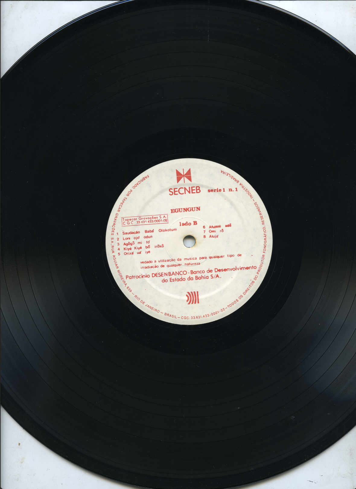
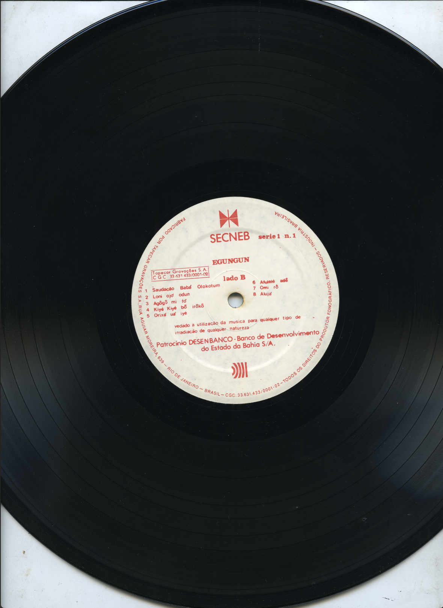
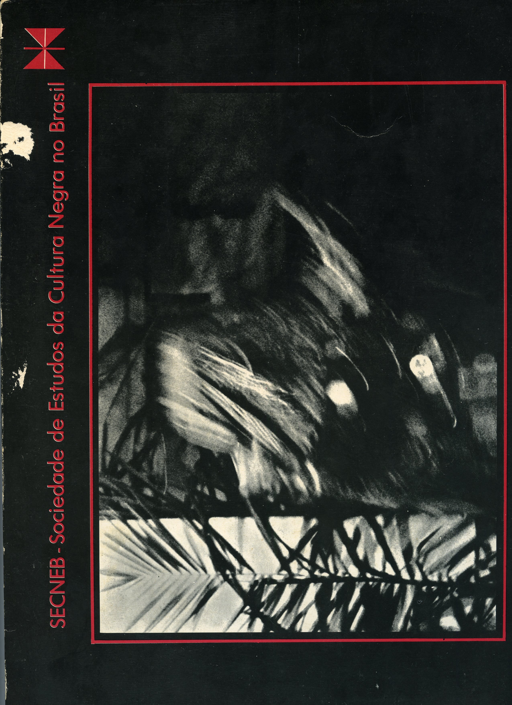
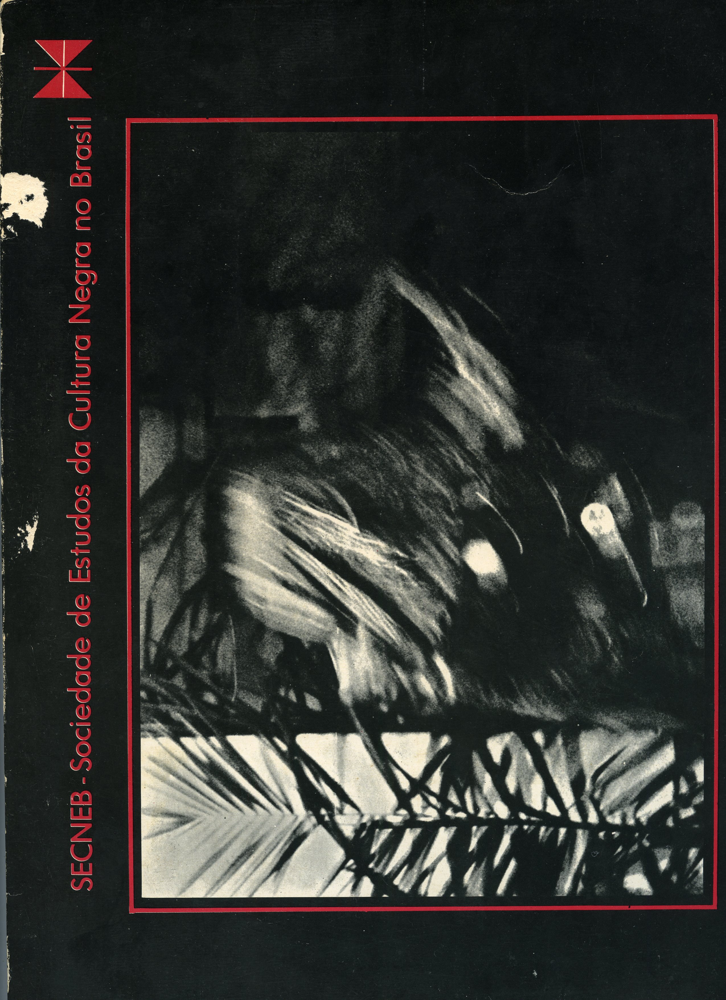
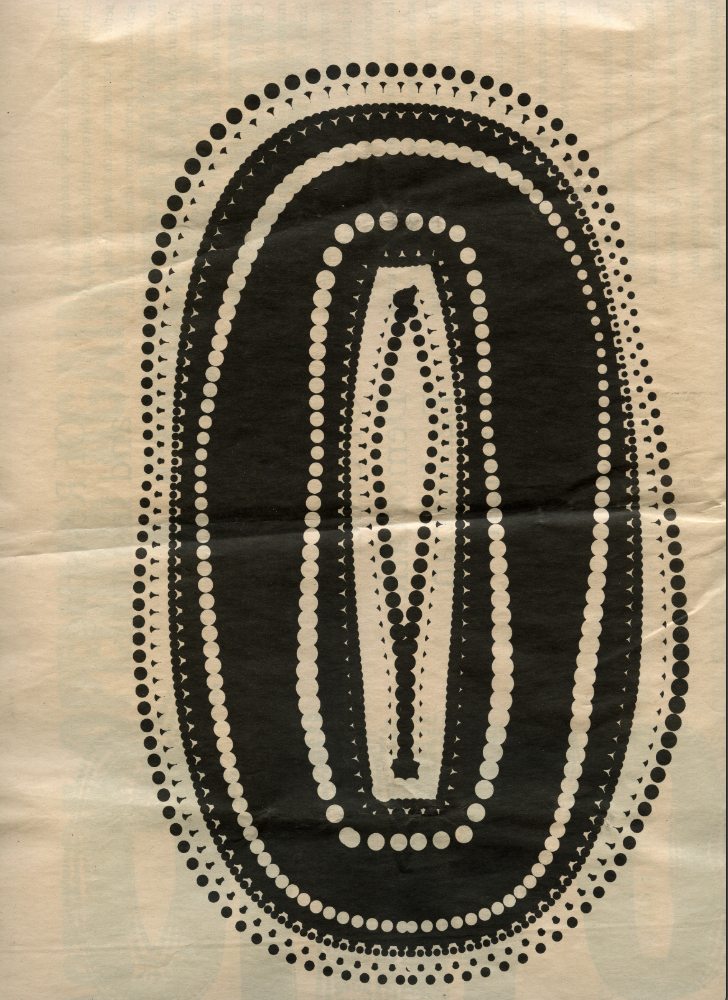
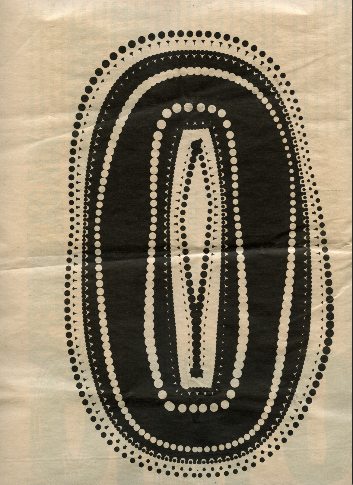

The focus of this text is to legitimise the body as a terrain of knowledge in physical and digital spaces". What is repeated in the body and the voice is also an episteme," according to thinker Leda Maria Martins. A discussion on the (dis)connection to the body emerges from the remix of lived experience, family dialogues, theory and graphic memory: curated found images that reflect research on how bodies can write in the digital environment. Here the notion of the body, choreography and writing as a means of communication meet. The body is charged with the power to dismantle Eurocentric conventions that have marginalised oral and physical knowledge from graphic design education.
LiONESS-HORSE
Santas
lioness horse
who rides calmly
and devours men
What comes out of her mouth
it also runs down her ass
her tail shouldn't be tied up
stuck tail holds the throat
and saints need to growl shout
Santas has to keep her tail loose
to do what she was born to do
be free, enchanted, and dignified
for the right to speak and dance
She has spiritual permission
to engage in unacceptable behavior
She runs free, looks crazy, and doesn't hesitate
Not afraid of anyone
She is shameless
Nothing stops her
Killer
She kicks you
CRAU!
Kill you!
In self-defense!
She will kill you
dancing and throwing smiles
Improvisation is her power.
And when she dances she exposes herself
No distortion suppress, Santas
by: Negrita Desbatiza
DRiBBLE
Dribble: as in dodging, swinging the body as a strategy for moving forward; getting
away from obstacles.
Graphics: as a means of registering the flow and movement of the
body
through words, images, vectors
and signs.
Loose body: is the presence of the body in performance.
Emancipated.
In its freedom to communicate
its knowledge through body language.
I wish everyone who reads this text good encounters, may the words become alive and fruitful. May this text be placed on the floor. May it mark once and for all my enchanted territory, the known body. I have chosen to write it so that I don't forget it. For the opposite of this is disenchantment. It means conforming to the countless stories told about my body in order to dominate, civilize and silence it.
Presenting the body you speak of, I am Lara Santos, a black cisgender queer woman from Brazil. My multidisciplinary work strategically engages with graphic design as a means to bring bodies together to record their graphic discourse and publish their knowledge. It is important to emphasise that subjectivity is a fundamental point here, considering a movement against homogenisation in favour of multiplicity.
About the motivations for doing this: for a long time I practiced neglecting the body, that is, leaving my body aside, until it became very difficult to hear it, even to know it. This dynamic is a problem that affects a lot of people. In my story, I see that this distancing from the body has taken place within different structures, reinforcing lies and universal formulas of holiness, progress and civilization.
This text is the way around these lies told about the body. It reflects on how the body is in confrontation with choreographies made up of social norms that say the body must be contained and controlled. I focus on what is the repertoire of the body. If the body speaks, what are the relationships between the body and graphic design? How do you write with the body?
So let's go. May I be filled with the desire to write. May I be able to awaken what has been decorated with time? May this be nothing more than the lifelong authorization to say words without fear that the language won't be formatted for everyone's understanding. That the word and the body are not separated in communication.
Below I present to the reader the route of my journey to find the body and its knowledge. I present the path of becoming aware of how both (the body and graphic design) transport epistemes.
I write through a mix of references, authors, artists, designers, interviews, memories and experiences that have given me the procedure to write here. I honour every name mentioned here. Maximum respect and affection for the contribution of the people I mention in this text.
May we have an open mind for this journey.
LOOSE BODY

“Memory is the contents of a continent – its life, its history, its past. As if the body
were
the
document. It’s no wonder that dance for black people is a movement of liberation.”
– Beatriz Nascimento
I am part of a large family, most of my relatives are concentrated in the state of Rio de Janeiro, more precisely in Campos dos Goytacazes. I call them a reference because what I present in this text is closely related to what I learned from them. Our family gatherings are fundamental, dancing is a sacred tradition in our encounters, and this has always been my reference.
At Christmas 2024 I got together with some of my family, the sun was shining and everyone was by the pool. There was me, my mother, my uncle Carlinhos, my uncle Amaro, my aunt Celeste, my aunt Celi, Tia Carmem, who arrived later, and my cousin Mariana, who was a mermaid at the edge of the pool. I took advantage of the moment to bring up a subject I had been meaning to discuss with them
Without hesitation, I asked the first question:
LARA: Why is dancing important to our family?
DORA: I have a memory of us dancing in the back of the house in
Texeira
de Melo, in Campos dos
Goytacazes.
CELI: Lots of music, the family has always been passionate about
parties
and dancing.
CELESTE: Lots of samba
AMARO: Because dancing lifts your spirits.
CELESTE: Free.
LARA: Yeah…Free from what?
AMARO: frees you from the stress of everyday life, work, and little
money.
DORA: Dancing is freedom. And there are places I go that I don't want
to
dance. Get up and move. For
me, dancing means exposing yourself. You know… these work parties, when samba plays, people
expect
me to dance. "Look, the black woman who dances." I'm not going to give that stage, I'm not going
to
samba driven by that kind of expectation. I don't feel like it.
CELESTE: I was shy, dancing freed me, loosened me up.
CELI: I feel like a bird and let myself be carried away by the
rhythm.
CARLINHOS: samba is part of our ancestry,
right? Dancing expresses where you
come from. It's spiritual,
dancing until you reach Zen.
AMARO: Dancing prepares me physically. Dancing leaves the body loose,
otherwise, the body becomes
trapped, and shrunken.
[cut]
I would like to reflect on this concept that my uncle Amaro taught us: "Dancing prepares us physically, dancing makes our body loose" - this is wisdom! - The loose body is the body in the presence, without shame, protected even when exposed, ready to evade and counterattack, in tune with its intuition, which feels the freedom to express itself!
Just imagine! On a sunny day, a black woman, 80 years old, with gold chains around her neck and sparkling earrings, with a ponytail, with a bright and sharp look. She gets up from her chair and starts dancing, with a smile on her face, her hips swaying from side to side. She looks at you and invites you to dance, laughing quietly, and you can only watch as she is surrounded by the rhythm of the samba that drives her. She plays and plays with her gestures, with her facial expressions, with her short movements, interwoven with sapiência.
"Dance is the ideal medium for the intellect-body to perform its inventions. It is the perfect space for the creation of gestures: favorably permeable to the movements that inhabit the life going on inside the body and simultaneously willing to work them in plastic and expressive terms in an attempt to achieve aesthetic syntheses that can impact the senses and transcend the utilitarianism that saturates contemporary experiences–which so frequently subjugates the body." – Danilo de Miranda, "A living library of gestures"
The wisdom of dancing to have a physically prepared body is a daily coping strategy. A loose body goes into battle, into confrontation, it is concentrated. A weapon body, a vital body, an enchanted body that remains connected to its roots, its history and its ancestry.
On the other hand, the trapped body is the sleeping body, left aside, forgotten, apathetic, unprepared, detached from itself, closed, that is, an "obedient" body, but fragmented by distortions, subdued by prejudices.
[Fragment]
…..
CARLINHOS: Everything is recorded in us.
[Cut]
Everything is recorded in the body, the body registers information about its socio-political context. It is like a platform for disseminating knowledge through the means of movement, which informs in the same way as writing. Like a collection, it stores stories, traumas and symbols.
The performing body transmits data. When dancing, content is expressed - the memory process is
triggered by movement - like a sponge, the body retains memories.
I seek awareness of the above repertoire of embodied knowledge to empower myself, to let my body
be
loose, free.
"Dance is a sociopolitical method and practice, a means of writing, narrating and disseminating histories. It is a corporeal phenomenon that can be a catalyst for building communities and challenge and transcend the boundaries of societies and languages. The dancing body becomes the witness, a somato-testimonium – the body in a dance performance and the movements employed as a formal statement are equivalent to a written, spoken, eyewitness or earwitness account, proof of a spatiotemporal reality" – Bonaventure Soh Bejeng Ndikung
TRAPPED BODY
I look for the forces that shrink my body in order to deviate from them. I look at the testimony of my life and I analyse that the different institutions I have passed through have imposed a mentality that preserves oppressive "norms" that hurt my existence. Norms that force me to conform to what is "acceptable". I'm talking about the institutions that exist to worship the taste of whiteness and erase the memory of the body.
In this context, I remember being motivated by pastors to silence me, to give up parts of myself that were synonymous with "sinful and negative" behaviour. To illustrate, I remember being advised by a pastor to delete a photo of me playing capoeira from my Instagram. He explained that because it was a cultural expression related to Afro-Brazilian rituals, the photo was a negative symbol and should be deleted because I was part of that institutional community.
However, this illusion, based on racism, only served to imprison my body and empty my perception of what capoeira means. The torture of the constant disciplining of the body atrophies the relationship of trust with it.
"Race is a myth—something made up in the seventeenth century that has been carried forward, day by day and century after century, into the present. As Quinn Norton observes, “Whiteness is one of the biggest and most long-running scams ever perpetrated.” It’s a classic example of what therapists call gaslighting: getting people to override their own experience and perceptions by repeating a lie over and over, and then “proving” it with still more lies, denials, and misdirection. Eventually, if the gaslighting is successful, the lies are widely accepted as truth—or even as essential facts of life, like birth, death, and gravity." – Resmaa Menakem
Let's think about the memories inscribed in the body. But be careful, because in contrast to Western traditions that emphasise the recording of memory strictly through words. Here, with the writer Leda Maria Martins as a reference, I welcome the notions that recognise the body, with all its diversity of knowledge, as significant in the inscription, production and dissemination of knowledge. Therefore, the mastery of an alphabetically written language is not decisive for the inscription of knowledge.
Access to written discursive language is a privilege and has long been a tool used by the hegemonic social class in the service of its self-promotion, its domination, invested in the disqualification of other ways of producing knowledge, including those carried out through the body.
According to Leda Maria Martins, African bodies displaced to the Americas expressed their knowledge primarily through bodily performances. In her book Performances do Tempo Espiralar: poéticas do corpo-tela, she writes: "The word was danced, the gesture was sung, in every movement there was a choreography of the voice, a score of diction, a graffiti pigmentation of the skin, a sonority of colour".
In this way, the treatment of the body as an episteme can refer both to the subjective knowledge of this experience lived internally and to the body's broader structure in relation to the world, its socio-cultural historical context. This leads me to conclude that knowledge of the body, memory in all its vastness, provides me with material for institutional emancipation. "What is repeated in the body and voice is also an episteme".
On the other hand, the status quo that represents the colonisers in the Americas, during and after the colonial period, launched various attacks on African and indigenous bodies, using the most diverse instruments of domination. For example, the religion that turned rites into sins, the laws that banned samba and capoeira. The police that killed and continue to kill black children. Is the distortion of history that authorises the illusory narrative of white supremacy, which does not refer to itself, but is based on "othering" to maintain its social privilege. But I do not propose to enter into that discussion here.
"The body is a place of memory, and in it are inscribed the experiences lived and updated in everyday life. The body as a totality of knowledge, perceived integrally, was abandoned and split, de-interlaced from the brain for a long time. The aphorism “I think therefore I am” leaves deep marks on our imagination about the body, making us believe that the body is not a way of thinking, that the body “does not know." -Luciane Ramos Silva
Although it is not a central theme of this text, the unconditional value of rationalism must be deliberately reduced here, because it makes us "swell our minds until we forget our bodies"(Luiz Rufino) said. The fight against forgetting is an affirmative action. In this way, I call for rationalisation to reduce to the point until it is no longer superior to body awareness.
Finally, I would like to make it clear that the body travels in different dimensions here, it can be the body as a physical, carnal apparatus. It can be the body that has lived on this ground that we are now walking on and that is now being traversed by history (Archive). Another possible dimension here is the witnessing body,(container) the body that contains embedded knowledge. The collective body shares experience with its network, which is in relationship with itself, with others and with its context. The body image, which is visual and aesthetic, creates images. The body in displacement, in flow, in performance, loose...
TENSiONS BETWEEN BODy AND WORD
[bridge]
Seize Time, Emory Douglas, The Black Panther, September 27, 1969
Emory Douglas (1943) was an American graphic artist. He is known also for his work as minister of culture for the Black Panther Party from its founding in 1966 until the 1980s. His art played a crucial role in communicating, propagating, and visualizing the ideals of the Black Panther Party.
[bridge]
It's really good to invent bridges, to make transformations, to deliberately bring together fields of knowledge that are supposedly distant. Approximation allows us to see movements that coexist; this gesture opens up ways of deviating from monolingual regimes, that is, from beliefs that rigidify and standardise ways of producing knowledge.
In this chapter, I want to continue thinking about the body in performance at the centre of everything, including graphic design, my main field of activity. For this reason, the effort here is to expand the notion of knowledge distribution, which I believe is the point where the body and graphic design come together, despite their differences.
Graphic design is a technological means of communication, responsible for creating visual systems and distributing information. It is also a professional category, i.e. a work that has an impact (micro or macro) on the public sphere, whether in the context of culture, the market, aesthetics, the economy, communication, history or education. This awareness of the social place that the designer occupies is essential, as it allows for a discussion of how this being has the potential and authority to restrict and/or induce the movement of bodies.

"the first identification documents designed were to restrict movement" – Ruben Parter
The approach to graphic design in the educational institutions I have attended still reinforces an illusion that deals with what has been created in Europe as a reference for imposed standards. The history of design is still at the service of Europe, and therefore the academy, on the basis of difference, distances itself from information about bodies because they are outside the canon of design.
The body as a subject is silenced in graphic design. Be it the body of the subject who creates, or the body affected by the authority of this discipline. Thus, attention to these bodies is insufficient.
These dialogues, absent in the classroom, lead to the predictable, to the trapped body (trigger and rage). The narrative struggle continues.
Through the body, I see the possibility of overflowing the control mechanisms applied by the industry of myths of whiteness that serve to satisfy its own appetite. But now, I'm the one who's going to eat, and I'm not alone!
With my body loose, I enter this game, looking for the interaction between body language and graphic language, to write and say much more than standard forms allow.
How does graphic design affect bodies, and how can bodies move/affect graphic design? Those were the questions that started my concern and continues to guide me in the search for images that reflect graphic discourses that transpose the constructions that trap the body.
Based on the questions above, I would like to consider the tensions between body and word in three ways:
- First, I want to look at the position of graphic design, especially typography, and access to
writing techniques.
- Secondly, I will focus on the graphic memory that reflects the habits of a territory and
registers
the presence of the body in the field of visual communication. A small selection of graphic
compositions collected during my journey.
- In the third way, I present an experiment in which I strategically propose to hack typography
to
write with the body in the digital environment.
TYPOGRAPHY AS THiNKiNG iMAGE
The graphic designer, broadly speaking, is responsible for articulating relationships between people and information through visual communication projects. We (designers) can have different professional responsibilities, but here I want to focus on typography and the management of written and verbal language.
In short, typography is the alphabet taken to a certain level of abstraction. The typographer, in turn, is responsible for organising the information on the page in order to publish it, through the mastery of printing techniques, whether analogue or digital, which vary according to the era and the resources available.
The practice of printing with movable type was officially introduced in Brazil in 1808, when the Portuguese Court moved to Rio de Janeiro. It is undeniable that a typographic tradition was established at that time, standardising the appearance of letters, implying the sophistication of type production, and influencing the verbal graphic language and control over it.
According to Leda Maria Martins, the mastery of writing techniques played an essential role in the exclusion, erasure and silencing of the knowledge of the colonised by the Europeans."Alphabetic writing was installed as an instrument of exclusion, segregation and stigmatisation. It was not an addition or a complement, but rather an imposition, an exclusive means of dissemination, as well as the values it disseminated, be they social, religious, behavioural or world-views".
The manipulation of the alphabet - whether within the typographic tradition or in poetic, vernacular, experimental forms, calligraphy, on the street, in a notebook, on the screen - are gestures that are embedded in the way we inscribe ourselves in time and in the way we relate to living knowledge in words.
speak = voice (oral culture) write = manuscript (manuscript culture) type = digitus (digital culture) Source: Writing as language technology, by Cristiane Dias
Typography is a thinking image, which means that there is a flow of thought in typography. The word produces something about what it represents and through the affection it has in the reader/viewer, and also involves the thoughts of those who produced and/or reproduced it. So typography is an image of thought because it involves the positions of those who have manipulated it, those who have interpreted it and those who read/see it.
In principle, writing is a necessity because it symbolises the preservation of a people's cultural memory, resistance and resilience. Since the end of the 1980s, the "access" to alphabetic writing through typography has gained more space in emerging countries with the "popularisation" of digital technologies. The digital environment therefore facilitates a response to the legacy of exclusion of pre-digital methods of producing and publishing knowledge.
Reflecting on the concept of graphic discourse - as a powerful tool for disseminating embodied knowledge - deliberately brings the body into the discussion, as well as its care with design technologies. Technologies that open up space for the writing/rewriting of history, recorded as graphic memory.
"This is also why we say that the invention of different technologies necessarily generates a change in culture and memory. Oral culture, manuscript culture, printed culture, mass (media) culture, digital culture. Each one of them carries within itself a memory and a society." – Cristiane Dias
"How can we monumentalise a historically antagonised voice and re-historicise the image?" was the question that guided Yhuri Cruz in the production of the graphic works presented below.
"MONUMENT TO THE VOICE OF ANASTASIA, 2019. Photo: artist's website/Reproduction"
Yhuri Cruz (1991) is an artist from Olaria, Rio de Janeiro. His work comes from the field of memory, exploring ways to re-historicise the past through the invention of new myths. "Monument to the Voice of Anastácia" is a work that rescues and recreates her image. Anastácia has been massively represented with a mask covering her mouth, as a symbol of silencing in the collective imagination. Through Yhuri's ability with digital technologies, he uncovers the veiled mouth and celebrates her voice.
Anastácia Livre is presented in the printed form of a little saint–a small two-sided printed flyer – the format most commonly used by churches and political campaigns. The little saint (santinho) was massively distributed and by 2020 was already part of school history textbooks.
In light of the above, the intentional care of graphic design tools is a strategy for unlearning the discourses that promote the symbolic, aesthetic, and institutional continuities of colonial relations of domination over the body.
GRAPHiC MEMORY
Typography in the broadest sense is found in several places, this tool reflects worldviews, moves bodies, indicates flows of people and facilitates the gathering of bodies, both physically and digitally. The aim is to expose graphic memory, taking into account that the intimate relationship with images triggers memory.
Likewise, typography as a thinking image takes into account the flows of interaction between the body and the image. It also takes into account the affection that graphic language has for the public, that is, the active role it plays in the daily life of society.
Graphic memory brings me closer to the sites of production and dissemination of black aesthetic-cultural knowledge in order to rethink the history of graphic design and its legacy.
Below I present a collection of images that I have grouped together during my research and that reflect the points made in this text, graphics that open windows to see beyond standard forms, images loaded with context and technology.
LP SECNEB-Sociedade de Estudo da Cultura Negra no Brasil,
Egungun,
1984. Photo: Personal Archive
ShakeDown Film, directed by leilah weinraub, 2020,
https://vimeo.com/403114914
"Quilombismo, collected during Acts of Opening at HKV, Berlin,
2023"
 


 



 



CORPOGRAPHY
"Experiments with transdisciplinary and transversal languages reveal attitudes and changes in protocols and aesthetic and ethical values" - Leda Maria Martins
“Hacking here is a de/composition, or a radical transformation (or an image) that exposes, shakes and perverts form and formulas. It is an active and purposeful misunderstanding, mis-reading and dis-appropriation.” – Denise Ferreira da Silva
"Corpography is that which points to the unrepresentable that unites language and the body in digital space. What I call corpography is, therefore, this simulacrum of the body in the letter, of the letter on the screen, a digital corpography. A way of formulating the body and language in the digital." – Cristiane Dias
In light of all that has been said, I would like to briefly touch on my research, still in its infancy, into the practicalities of writing with the body in the digital environment.
The act of hacking typography, guided by the spirit of disobedience to typographic traditions that bind the body, means strategically decomposing the letter and transforming it into an image beyond the lexical or the intelligible. This effort is aimed at bringing the body closer to (characters/orthography/calligraphy/type) to transmit knowledge. After the first research process, I noticed that the result tends to be an abstraction of the standard forms of the letter, because of the space that the presence of the body occupies in the letter.
Symbolically, this process represents the intervention of dance as a trigger to inscribe bodies in typography. A freely accessible counter tool that legitimises the knowledge of the body and takes it deeply into account in order to invent.
Experiment done with Thabata Lorena, body simulacrum, to hack typography
The images above represent the process of creating the typography for the visual communication of "Set", a multilingual hip-hop concert performed by Thabata Lorena, the rapper who has her dancing body inscribed on the letters. In this work I have applied my research, which is at an early stage, the steps I have followed are
Step 1. Dancing, following the body in performance, witnessing the dance, gathering with other
bodies, celebrating;
Step2. Collect all visual records of the bodies: video, photos, notes/handwriting,
interviews;
Step 3. Select the sample that will be the repetitive unit that will serve as the basis for the
composition;
Step 4. With malice, experiment with the repetition of units, spaces, scales, colours, signs and
compositions.
Step 5. Hack typography: write messages and add codes. Time to give meaning to symbols and apply
typography to some physical and/or digital support.
(DANCE+WORD), (BODY+MEMORY), (CONTENT+FORM) = N
Here is the constant in the method I use to achieve the abstraction of the letter, this unknown consists of cutting out fragments of the body's movement to invent a letter, a symbol, an image, or a pattern. In translation, this process reminds me of the gesture of sampling, separating a sample from the movement and drawing with it to invent a new composition, an image, a rhythm…
This sample is transformed when repeated, and even when placed in a different context, it still carries the reference of the original movement, which passes through the designer's care to form a new image.
Sampling typography (N) is a careful process, you need the ability to transform the sample, and this is the spirit that drives the flow of thoughts on the graphic composition.

To conclude this text, I would like to share a memory, a phrase I heard from Rodrigo Rodms, a Brazilian professor, editor and graphic designer from Rio de Janeiro. In the first course I took with him, "Negritude in the Thread of Design History", he said that his goal was "to fight for an education that interests black people". That phrase has stayed with me ever since.
The movement to centralise the body in graphic design was the strategy I found to make this study autonomous and to address my concerns about design education, as a motivation through proximity to the displaced. Thus, a gesture of self-repair, focusing on the body's repertoire and its poetics, was the way to create/study design with a loose body.
Finally, I would like to conclude this nostalgic reminder, which celebrates continuity, of the processes of rescuing the body's memory, thus recognising its capacity for historical resistance and its intuitive power to create and publish resurgent images that transpose the constructions that imprison the body.
“In fact, working in the territory of memory is to reaffirm that it is not just about remembrance or interpretation. Memory is also a symbolic construction, by a collective that reveals and attributes values to past experience and reinforces community bonds. And memory can also be a review of the narrative about the “victorious” past of a people, revealing anti-humanitarian acts they committed – which elites often want to erase or forget.” - Cida Bento, in Narcissistic Pact of Whiteness.
Acknowledgments
"Povoada
quem falou que eu ando só?
Nessa terra, nesse chão de meu Deus
Sou uma, mas não sou só
Povoada
quem falou que eu ando só?
Tenho em mim mais de muitos
Sou uma, mas não sou só"
–––––––––––––––––––––––––––––––––––––––––
"Peopled
Who said I'm alone?
On this land, on this floor of my God
I am one, but I am not alone
Peopled
Who said I'm alone?
I have more than many in me
I am one, but I am not alone"
– Sued Nunes
I feel like thanking a lot of people, Vish!
Thank you to those who are close to me. I am a witness of the love that moves mountains, thank
you, grandmother Irene Ramos, mother Dora Gomes, father Otávio Ramos, and grandfather Domiciano
Bispo. They gave their blood so that I could have this oportunity, thank you for all the support
and dignity.
I thank my family, my aunt Cladia, Glaucia, Celeste, Celi, my uncle Carlinhos, BIA, Gilmar,
Irineu, Kátia e to Rogério, meus primos irmão Wellington, Ricardo, Carol, Mariana, Thalita,
Deivison. Our love feeds my fire.
Deep and additional thanks to my Copernicus family, my aggregated people who have somehow gone
through this time with me, who also know the immaterial value of this process. That the ways are
open for the continuity of our love.
Luca Serafini
Elisa Gallego
Viviane Von Arx
David
Paulo Chicarelli
Luiza
Isabela Resende
Guenn Ramon Gustina
Julie
Sandra
Gabriel Gabzito
Laura Samily
Letgabs
Helder Fruteira
Malu Neves
Filipe Alemar
Kleber Cardoso
Kauã Simões
Karina Villafan
Luciane Ramos Silva
Allan da Rosa
Maria Renara
Gi Soul
Yasmin Vogado